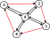

Halfedges
For each successful triangulation (with any settings) except triangles and positions, one can get Output.Halfedges.
Halfedges are a data structure that describes neighboring triangles.
All triangles in the generated mesh are clockwise.
For example, consider triangle \((a, b, c)\) (at indexes: \(i, i+1, i+2\) in Output.Triangles), which is made of 3 halfedges \((a, b)\), \((b, c)\), \((c, a)\).
A halfedge is a directed edge, i.e., \((i, j) \neq (j, i)\).
In the halfedges buffer, one can find the \(\mathtt{id}\) of the opposite halfedge, if it exists.
In the case when the opposite halfedge is not present in a mesh, then Output.Triangles[id] = -1.
using var triangulator = new Triangulator(Allocator.Persistent){ Input = { ... } };
triangulator.Run();
var halfedges = triangulator.Output.Halfedges;
Consider the following example where \(\triangle\) stands for triangles and \(\mathtt{he}\) for the halfedges buffer.

For more details follow the delaunator guide.
Constrained halfedges
When performing constrained triangulation, you can determine whether a given halfedge is constrained by using Output.ConstrainedHalfedges.
var constrainedHalfedges = triangulator.Output.ConstrainedHalfedges;
This information can be particularly useful during post-processing by the user.
Note
If constraint edges (Input.ConstraintEdges) are not provided and mesh refinement (Settings.RefineMesh) is enabled, constrained halfedges are automatically set to true for boundary edges (i.e., for which halfedges[i] == -1).